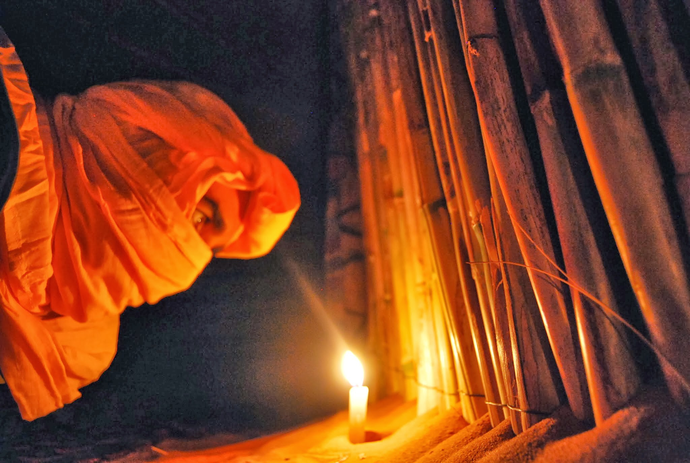

În deșert
Miez de noapte. După un sfert de oră de urcuș întins, conduși de berber, ajungem gâfâind pe creasta dunei sahariene.
Mergem de-a lungul ei pâna în vârf. Nisipul cărămiziu și rece îmi umple nestingherit adidașii -- știe că tot ce-i în jur îi aparține.
Ne asezam toți cinci, îmbrățișați de vântul hain.
Câinii jucauși au chef de hârjoneală. Atingerea botului umed pare un miraj în uscăciunea din jur.
Deasupra, o puzderie de stele strălucesc de mai mult timp decât pot întelege. Realizez că sunt doar un grăunte de nisip.

Speranță
Nechezatul dureros, neobișnuit de puternic pentru animalul slăbit, sperie păsările din jur.
De obicei atent să meargă ferit, Ronan nici măcar nu tresări de data asta. Era prea obosit după două zile și o noapte de mers.
Sângele său era amestecat cu al calului, pecetluind parcă într-un ritual pământesc legătura lor atât de trainică.
Mâna lui Ronan îi dăduse prima înghițitură de iarbă proaspăta, firavă după iarna grea în care se născuse.
Fusesera împreuna când tatăl său l-a învățat să prindă pești din râul învolburat, când s-a întrebat cine sunt sufletele din spatele luminițelor de pe cer, și cand a luat-o pe Koro de acasă pentru a serba împreuna înflorirea liliacului.
Vremurile acelea păreau atât de îndepărtate acum, la numai două răsărituri după atacul tribului nomad.
Cu cei mai puternici bărbați plecați la vânătoare, nu avusesera nici o șansă.
A realizat asta abia după ce a vazut-o pe Koro căzând, strapunsă de lama lăcrimânda a toporului. Tăierea capului cu fața vopsită în dungi de indigo și roibă nu-i adusese nici o alinare.
Pe drum nu se gândise decât la nenumaratele căi în care ar fi putut evita totul. Dacă ar fi explorat ținutul din nord mai târziu, i-ar fi văzut venind cu câteva zile înainte.
Dacă ar fi mers cu Koro la părinții lui în loc să fi amânat plecarea. Dacă...
Prea mulți Dacă. Va trebui să trăiasca cu ei tot restul vieții. Da, de asta era sigur: va trebui să traiască.
Auzi scâncetul familiar, și norii i se risipiră într-o clipă din privirea ce i se îndreptă în jos. Ochii lui Koro îi zâmbeau plini de speranță din pruncul prins în blana albă la pieptul său.